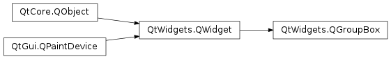

QGroupBox¶
Synopsis¶
Functions¶
- def
alignment() - def
initStyleOption(option) - def
isCheckable() - def
isChecked() - def
isFlat() - def
setAlignment(alignment) - def
setCheckable(checkable) - def
setFlat(flat) - def
setTitle(title) - def
title()
Slots¶
- def
setChecked(checked)
Detailed Description¶
The
PySide2.QtWidgets.QGroupBoxwidget provides a group box frame with a title.
A group box provides a frame, a title on top, a keyboard shortcut, and displays various other widgets inside itself. The keyboard shortcut moves keyboard focus to one of the group box’s child widgets.
PySide2.QtWidgets.QGroupBoxalso lets you set thePySide2.QtWidgets.QGroupBox.title()(normally set in the constructor) and the title’s alignment . Group boxes can becheckable(). Child widgets in checkable group boxes are enabled or disabled depending on whether or not the group box ischecked().You can minimize the space consumption of a group box by enabling the
flat()property. In moststyles, enabling this property results in the removal of the left, right and bottom edges of the frame.
PySide2.QtWidgets.QGroupBoxdoesn’t automatically lay out the child widgets (which are oftenPySide2.QtWidgets.QCheckBoxes orPySide2.QtWidgets.QRadioButtons but can be any widgets). The following example shows how we can set up aPySide2.QtWidgets.QGroupBoxwith a layout:groupBox = QGroupBox("Exclusive Radio Buttons") radio1 = QRadioButton("&Radio button 1") radio2 = QRadioButton("R&adio button 2") radio3 = QRadioButton("Ra&dio button 3") radio1.setChecked(True) vbox = QVBoxLayout() vbox.addWidget(radio1) vbox.addWidget(radio2) vbox.addWidget(radio3) vbox.addStretch(1) groupBox.setLayout(vbox)
-
class
PySide2.QtWidgets.QGroupBox([parent=nullptr])¶ -
class
PySide2.QtWidgets.QGroupBox(title[, parent=nullptr]) Parameters: - title – unicode
- parent –
PySide2.QtWidgets.QWidget
Constructs a group box widget with the given
parentbut with no title.Constructs a group box with the given
titleandparent.
-
PySide2.QtWidgets.QGroupBox.alignment()¶ Return type: PySide2.QtCore.Qt.Alignment
-
PySide2.QtWidgets.QGroupBox.clicked([checked=false])¶ Parameters: checked – PySide2.QtCore.bool
-
PySide2.QtWidgets.QGroupBox.initStyleOption(option)¶ Parameters: option – PySide2.QtWidgets.QStyleOptionGroupBoxInitialize
optionwith the values from thisPySide2.QtWidgets.QGroupBox. This method is useful for subclasses when they need aPySide2.QtWidgets.QStyleOptionGroupBox, but don’t want to fill in all the information themselves.See also
-
PySide2.QtWidgets.QGroupBox.isCheckable()¶ Return type: PySide2.QtCore.bool
-
PySide2.QtWidgets.QGroupBox.isChecked()¶ Return type: PySide2.QtCore.bool
-
PySide2.QtWidgets.QGroupBox.isFlat()¶ Return type: PySide2.QtCore.bool
-
PySide2.QtWidgets.QGroupBox.setAlignment(alignment)¶ Parameters: alignment – PySide2.QtCore.int
-
PySide2.QtWidgets.QGroupBox.setCheckable(checkable)¶ Parameters: checkable – PySide2.QtCore.bool
-
PySide2.QtWidgets.QGroupBox.setChecked(checked)¶ Parameters: checked – PySide2.QtCore.bool
-
PySide2.QtWidgets.QGroupBox.setFlat(flat)¶ Parameters: flat – PySide2.QtCore.boolSee also
-
PySide2.QtWidgets.QGroupBox.setTitle(title)¶ Parameters: title – unicode See also
-
PySide2.QtWidgets.QGroupBox.title()¶ Return type: unicode
-
PySide2.QtWidgets.QGroupBox.toggled(arg__1)¶ Parameters: arg__1 – PySide2.QtCore.bool
© 2018 The Qt Company Ltd. Documentation contributions included herein are the copyrights of their respective owners. The documentation provided herein is licensed under the terms of the GNU Free Documentation License version 1.3 as published by the Free Software Foundation. Qt and respective logos are trademarks of The Qt Company Ltd. in Finland and/or other countries worldwide. All other trademarks are property of their respective owners.